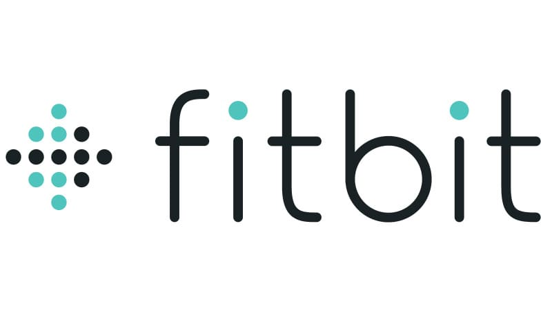

In this FIFA 23 Player Statistics Analysis project, I harness the capabilities of SQL Server to delve into player data, scrutinize the wage structures of the top 10 clubs, and craft top-performing teams based on both current and potential overall ratings. The project also provides an array of intriguing video game statistics.
.jpg)
In this hydrology data project, I employ Python to extract insights from NOAA's website, searching for a weather station that recorded rainfall intensity. I convert date and time information into datetime objects, group it by year, and determine maximum precipitation values within various time intervals (15 minutes, 30 minutes, 1 hour, 6 hours, 12 hours, and 24 hours).

In this US Air Traffic Analysis project, leveraging SQL Server, I meticulously examine passenger trends over a decade, including identifying the busiest month each year. This analysis provides insights into domestic and international flights, diverse airlines, and intriguing air travel facts.

In this Fitbit Data Tracking project, powered by SQL Server, I explore users' daily activity, including step counts, active minutes, and sedentary periods across the week. I also analyze users' sleep patterns, examining both their minutes asleep and their minutes awake in bed, offering comprehensive insights into their restful habits.

In this COVID-19 Data Exploration Project, executed through SQL Server, I conduct a rigorous examination of global and country-specific COVID-19 data. This analysis encompasses total cases, deaths, vaccinations, infection rates, death percentages, and the identification of the most affected countries. This in-depth exploration delivers pivotal insights into the pandemic's impact on a global scale, aiding in a deeper understanding of its dynamics and implications.

In this SQL-Powered Bike Company Data Cleaning and Analysis project, I optimize data quality by eliminating duplicates and null values, merging tables, and conducting comprehensive analyses. I scrutinize ride patterns, identify peak ride times and durations, highlight the busiest months and stations, and unearth intriguing insights into client behavior, all to inform strategic decisions.
In this Housing Data Cleansing Project, I optimize housing-related datasets for analysis using SQL Server. Tasks include date format adjustments, column splitting, duplicate removal, and null value replacement, ensuring data quality and usability.

In this section, you will discover a variety of interactive Tableau dashboards that bring life to the projects presented on this page. These dynamic visualizations offer an immersive experience, enabling you to explore the data more profoundly and extract valuable insights.